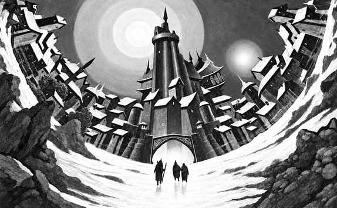

深渊 · Abyss
深渊据说有 666 层，实际层数可能更多。它是混乱邪恶的深处，充满恶魔、荒地、沼泽、腐败城市和无限传送门。第一层帕祖尼亚（Pazunia）拥有一千零一扇门的宫殿，传送门通往其他深渊层、原初位面、斯提克斯河和恶魔领主的领域。
深渊的每一层都可能是独立世界：沙漠、冰川、真菌森林、熔岩海、活体迷宫或无重力空间。层与层之间的门户常由恶魔领主控制，旅行者很难凭自身力量返回。恶魔会把原初位面来客视为奴隶、猎物或可利用的棋子；更强的恶魔领主则不断争夺其他领主的层。

著名领主包括奥库斯（Orcus）、狄摩高根（Demogorgon）、格拉兹特（Graz'zt）、帕祖祖（Pazuzu）、祖格莫伊（Zuggtmoy）、耶诺古（Yeenoghu）和阿斯摩蒂斯等。深渊的恶魔领主各自拥有军队、城市和特殊环境；旅行者若进入某位领主的领域，必须遵守其规则，否则会同时面对领主、恶魔仆从和位面本身。